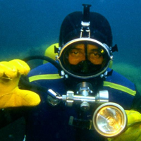

Тиск твердих тіл, рідин і газів
Тиск твердих тіл
Якщо натиснути на дерев‘яний стіл долонею , то сила рук людини приблизно рівномірно розподілиться по всій поверхні долоні і не спричинить помітної дії на стіл, але якщо з таким зусиллям натискати на гострий цвях, та сама сила діятиме на маленьку поверхню вістря цвяха, і він увійде в дерево. Отже, дія сили залежить ще й від площі поверхні, на яку вона діє. Дію сили на якусь поверхню характеризують тиском.
Тиском називають фізичну величину, яка дорівнює відношенню сили до площі поверхні, на яку вона діє, за умови. що поверхня перпендикулярна до напряму сили P=F/S
Одиницею тиску є 1 паскаль: 1Па=1Н/1м2
З визначення тиску випливає, що змінити тиск можна двома способами: змінивши силу тиску або змінивши площу, на яку діє ця сила. У більшості випадків змінювати тиск, змінюючи силу тиску, незручно, тому змінюють площу поверхні, на яку діє сила. Наприклад, щоб не було перевантаження на стопу, не рекомендується довго носити взуття на шпильках, тому що площа шпильки становить 1 см2, отже в цьому випадку важливо збільшувати площу поверхні. Також для руху по снігу використовують лижі,що значно збільшує площу опори людини.

Ваговий тиск рідин
На рідини, як і на всі тіла на Землі, діє сила тяжіння. Знаходячись у посудині чи на поверхні якого-небудь твердого тіла, рідина створює тиск. Цей тиск називають ваговим тиском рідини. Ваговий тиск рідини відіграє важливу роль у багатьох природних явищах і використовується людиною. Тому важливо знати, як розраховувати цей тиск, щоб можна було передбачити наслідки його дії, особливо на організм людини.
Тиск рідини залежить лише від густини рідини та висоти її стовпчика. р=ρgh.
Рідина тисне не тільки на дно, а й на будь-яке тіло, занурене в рідину, тому кажуть, що тиск рідини діє і всередині неї.
Життя людини тісно пов‘язане з процесами, які відбуваються у природних водоймах-річках, озерах, морях, океанах. Зрозуміло,що людина прагне дослідити водні глибини, щоб використати природні багатства і задовольнити свою природну цікавість. Проте при цьому людина стикається з дією вагового тиску води , який зростає з глибиною і суттєво обмежує глибину занурення людини у воду. Таку зміну тиску з глибиною відчувають на собі люди, які за фаховими обов‘язками повинні працювати на великих глибинах.
Крім тиску рідини, на людину у воді діє також і атмосферний тиск, який також треба враховувати водолазам і драйверам. Отже, загальний тиск, який діє на людину у воді: р=ра+ρgh.